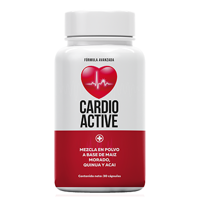
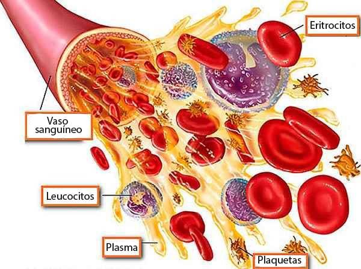

- |
- Sandra Morales
El director del Instituto de Investigaciones Cardiológicas de México probó personalmente el nuevo fármaco para la hipertensión. ¡La efectividad es asombrosa!
El Dr. Francisco Fernández-Avilés es el director del Instituto de Investigaciones Científicas en Cardiología de Bogota. De 1990 a 2006 fue jefe de departamento y profesor en el Hospital Clínico-Universitario de Valladolid, donde fundó el Instituto Científico de Cardiología ( ICICOR)
La paciente Catalina tiene 54 años, sufrió taquicardia toda su vida hasta que le diagnosticaron hipertensión crónica de última etapa. Catalina se sometió a muchos estudios, diversos tratamientos, limitaciones en la vida, todo esto influyó mucho en su estado psicológico. Entonces el paciente decidió ponerse en contacto con el Instituto Científico de Cardiología, titular de Francisco Fernández-Avilés, con la esperanza de recuperarse. Resultó que la hipertensión arterial era asintomática, refiriéndose al trabajo del corazón. Tan pronto como se completó el examen en el Instituto de Cardiología y se prescribió el tratamiento adecuado, el asunto despegó y ahora Catalina no sufre síntomas molestos.
Obtuvimos la opinión experta del cardiólogo сolombiana Francisco Fernández-Aviles sobre los peligros de la hipertensión y lo fácil que es tratarla y le pedimos que realizara un estudio médico con nuestro nuevo producto en cápsulas , que ha mostrado resultados asombrosos. ¿Entiende qué es la hipertensión?
La hipertensión arterial es una enfermedad común que afecta a más del 40% de hombres y mujeres. Sin embargo, la mayoría de ellos ni siquiera conocen la presencia de una enfermedad en desarrollo. A menudo, los dolores de cabeza, zumbidos en la cabeza, mareos leves se confunden con los habituales dolencia por fatiga y falta de sueño. Además, hay otros síntomas característicos que indican la presencia evidente de hipertensión:
- Ruido en los oídos
- Velo ante los ojos
- Debilidad general
- Alteración del sueño
- Mareos
- Sensación de pesadez en la cabeza
- Latido cardíaco fuerte
El Dr. Francisco Fernández-Avilés dijo que la presión arterial alta puede provocar un ataque cardíaco o un derrame cerebral, y aumenta el riesgo de demencia vascular y enfermedad de Alzheimer. Según el médico, la presión arterial alta puede causar fibrilación auricular, miocardiopatía isquémica, disfunción eréctil y insuficiencia renal.
Al mismo tiempo, el Dr. Avilés señaló que el problema con el tratamiento de esta enfermedad es que los pacientes no sienten presión arterial alta. Para evitar consecuencias muy graves, la hipertensión no debe ignorarse si no, tratarse adecuadamente.
¿Cuáles son las complicaciones de la hipertensión?
- crisis hipertensivas;
- trastornos de la circulación cerebral (accidentes cerebrovasculares hemorrágicos o isquémicos);
- infarto de miocardio;
- nefroesclerosis (riñón contraído primario);
- insuficiencia cardiaca;
- disección de aneurisma aórtico.
Causas de la hipertensión arterial:
- Predisposición hereditaria
- Estrés crónico
- La cantidad de sal consumida
- Baja actividad física, etc.
- En las mujeres, la causa de la hipertensión puede ser un período de reestructuración del cuerpo durante la menopausia.
El Día Mundial de la Hipertensión se celebra el 17 de mayo. Más de 1.500 millones de personas en todo el mundo padecen enfermedad arterial. En este día, organizaciones médicas especializadas abren sus puertas para descubrir el problema de esta enfermedad común con el fin de crear conciencia sobre los factores de riesgo. Hipertensión, desafortunadamente, se presenta en niños pequeños, lo cual es doblemente peligroso y requiere un seguimiento cuidadoso.
El 90% de las muertes se deben a las consecuencias de complicaciones crónicas de la hipertensión, como enfermedades cardíacas, diabetes, cáncer. A una edad temprana, las mujeres están más protegidas de las complicaciones de la hipertensión porque están protegidas por la hormona estrógeno. Sin embargo, después de 60 años, por el contrario, se convierten en los primeros en riesgo debido a la extinción de la producción de hormonas.
La hipertensión médicamente indicada es asintomática. Es posible que ni siquiera note la incomodidad, pero su corazón está sometido a una tremenda tensión con aumentos repentinos de la presión arterial. Por lo tanto, es muy importante ser examinado y comprender la gravedad de los riesgos.
La presión arterial se caracteriza por dos indicadores. La presión sistólica superior está determinada por el esfuerzo con el que, cuando el corazón se contrae, la sangre presiona las paredes de las arterias grandes. La presión arterial diastólica baja corresponde a la relajación del corazón cuando disminuye la presión de la sangre dentro de las arterias.
¿Cómo medir la presión correctamente?
- La presión arterial debe medirse en reposo, después de 5 minutos de reposo sentado.
- El manguito del tonómetro debe estar al nivel del corazón, su borde inferior - 2 cm por encima de la curva del codo
- La presión arterial debe medirse todos los días, ingresando los datos en el diario de presión arterial
CÓMO TRATAR SI YA SUFRE DE HIPERTENSIÓN
Para controlar la presión arterial y mantenerla en un nivel óptimo, los científicos del Instituto de Investigación en Cardiología han desarrollado para ti un súper producto 100% natural que se dispersa a la velocidad de la luz.
Cápsulas - Complejo 100% natural de extractos de plantas para la presión arterial, es un proceso suave y seguro que normaliza el trabajo del músculo cardíaco, combate la formación de placas de colesterol en las paredes de las arterias. Previene el desarrollo de enfermedades cardiovasculares: infarto de miocardio, angina de pecho, arritmias, aterosclerosis, etc.
Bajo la dirección del Dr. Francisco Fernández-Avilés, se realizó un estudio en 6450 personas con hipertensión arterial de diferentes edades. El estudio se llevó a cabo en tres etapas. Todas ellas fueron tratadas con cápsulas . Después de la primera etapa "introductoria" (1 semana), se reveló la digestibilidad del fármaco en todos los pacientes. En la segunda etapa del "Tratamiento" (2 semanas), el 93% de los sujetos pasaron dolores de cabeza, su salud mejoró. La tercera etapa "final" (3 semanas) mostró que el 98% de los pacientes hipertensos estabilizó su presión arterial, los pacientes estaban satisfechos con el resultado.
En el curso del estudio, se demostró que el medicamento no causa efectos secundarios. A la minoría restante, cuya presión arterial no se había estabilizado por completo, se le prescribió un segundo ciclo, después del cual los resultados fueron iguales
Qué obtiene de las cápsulas :
- Restauración del sistema cardiovascular
- Regulación de la presión arterial
- Tratamiento de la migraña
- Mejora del estado general
Los ingredientes totalmente naturales incluyen maíz morado, quinua, baya de acai, camu camu, té verde, cúrcuma y graviola. Todos los componentes recolectados tienen un efecto beneficioso sobre el sistema cardiovascular y la presión arterial, mejorando así el estado general.
Las cápsulas son fáciles de usar, dos cápsulas al día, una por la mañana y otra por la noche. ¡Solo necesita hacer un pedido en online y olvidarse de los problemas de presión arterial alta de una vez por todas! Date prisa, la cantidad es limitada.
En honor al Día Mundial de la Hipertensión, creamos el Programa de Beneficios para un Corazón Saludable junto con el Instituto de Investigación de Cardiología.
Para participar en el programa preferencial, es necesario adquirir las cápsulas hasta el inclusive. Puede hacerlo en nuestro sitio web oficial, sin intermediarios ni sobrepagos, completando la solicitud a continuación.
- Simplemente complete un formulario de pedido especial, ingrese su nombre y número de teléfono, y haga clic en "PEDIR AHORA"
- Espere una llamada de un especialista que responderá a todas sus preguntas y seleccionará el tratamiento óptimo para usted.
- Elija un día y una hora convenientes para la entrega, pague al recibirla
Haga su pedido ahora y obtenga un 50% de descuento en
ACTUALIZACIÓN DE
¡Importante! ¡Debido al gran volumen de solicitudes, debemos limitar la duración de esta campaña! La oferta será válida hasta
¡inclusive!
Todos nuestros productos cumplen con los principales estándares de calidad europeos y son probados minuciosamente antes de su envío. Por razones de seguridad, todos los paquetes se desinfectan y solo luego se envían al destinatario. Todas las manipulaciones con productos se llevan a cabo con trajes de protección especiales. Cumplimos con todos los requisitos del Ministerio de Salud.
Comentarios
Sara Lopez, GUADALAJARA
Tengo 39 años y tengo hipertensión desde hace 6 años. Anteriormente, esto no se expresaba con tanta frecuencia, pero con el tiempo los dolores de cabeza empeoraron, el problema se hizo más frecuente y simplemente se volvió insoportable. Los médicos repiten lo mismo, recetan los mismos medicamentos, que no ayudan en absoluto. Y decidí arriesgarme y automedicarme ordenando cápsulas en Internet. ¡El Universo mismo me los envió! Ya no me siento abrumada, comencé a llevar un estilo de vida activo, a disfrutar cada día. ¡Este remedio es mi salvación!
Raquel, México
Sara, hola, también fui a diferentes médicos y el tratamiento fue el mismo, pero nada ayudó. Después de sus comentarios, decidí intentar ordenar estas cápsulas, las tome durante una semana y el resultado ya está a la vista. ¡Se volvió mucho más fácil para mí!
Esteban, PUEBLA
Raquel, si supiera que existía un medicamento de este tipo antes, no sufriría dolores de cabeza constantes. No fui al médico, y leyendo tus historias, al parecer no perdí nada. Quien también sufre de picos de presión, tome las cápsulas y no dude del resultado.
Maria Valdivieso, PUEBLA
Obtuve las cápsulas hace 3 meses. Ahora mi presión arterial salta muy raramente, solo aumenta por una actividad fuerte, pero sin sensaciones dolorosas. Quizás este sea un medicamento milagroso, ya que finalmente me deshice de trastornos hipertensivos. Ahora recomiendo estas cápsulas a todos mis amigos. Resultado 100%.
Juan Estevez, GUADALAJARA
Buen día, quiero compartir mi experiencia. No soy fanático de ningún medicamento, incluso cuando algo duele. Vivo según el principio: cuando me enferme, desaparecerá. Pero ultimamente se ha vuelto muy problemático vivir con la presión arterial alta. "Es imposible concentrarse en el trabajo, la migraña persiste constantemente". Mi esposa, al ver cómo estaba sufriendo, decidió tomar todo en sus propias manos y ordenó en Internet algunos Medicamento para la hipertensión - Cápsulas . Al segundo día me sentí mejor, al principio no lo creí, pensé que se estaba soltando por sí solo. Pero cuando olvidé la dosis, la presión comenzó a aumentar nuevamente. Y luego me di cuenta de que la medicina estaba funcionando. Ahora estoy terminando el tratamiento y me siento muy bien. Gracias a mi esposa por cuidarme.
Ramon, PUEBLA
Juan, no es de extrañar que digan que las mujeres nos hacen mejores. Todavía no tengo esposa, tengo que cuidarme. También decidí pedir estas cápsulas y creo que esta es la mejor compra de los últimos años. No tenía hipertensión crónica, pero mi presión arterial saltó y ahora se ha recuperado. Así que lo recomiendo.
Laura Peralta, México
Hola. Me gustaría agradecer a la compañía por crear las cápsulas . Creo que esta es una excelente alternativa a muchos otros medicamentos farmacéuticos. Además, al menos todos los ingredientes son naturales, sin químicos. Por lo general, estos productos no son especialmente útiles, pero debido a este producto en particular puedo decir con seguridad que es efectivo. Sentí el resultado de inmediato. Pedí dos paquetes más. A juzgar por las críticas positivas, tal el producto se dispersará rápidamente.
Carla, México
Laura, ordené inmediatamente para un año. Un remedio milagroso, solo tomo estas cápsulas para la prevención. La presión ha vuelto a la normalidad, no ha saltado en medio año. Estoy muy satisfecha. ¡Se lo recomiendo a todos!
Pablo Buenaventura, GUADALAJARA
Buen día, tengo 61 años. Hace un mes, me trajeron cápsulas . ¡Mi condición de aquel momento y ahora ha cambiado drásticamente! Me siento genial, me he vuelto 10 años más joven. Ahora , cuando vienen mis nietos, puedo caminar con ellos con seguridad e incluso jugar al futbol. Disfruto pasar mi tiempo libre sin medir la presión arterial cada 15 minutos. Todo es genial, ¡gracias!